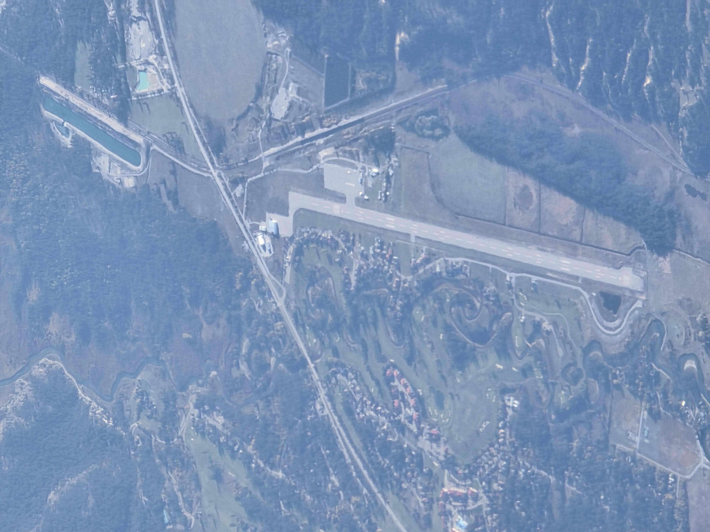
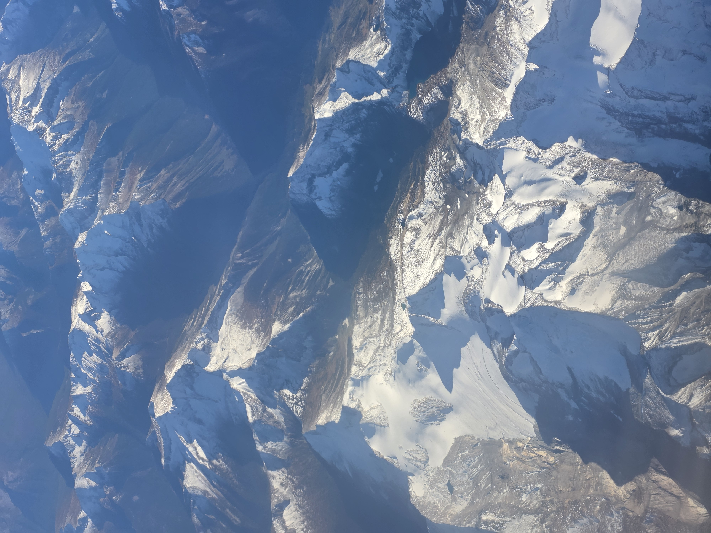

During the command line unit, I learned how to efficiently manage files and folders without relying on a graphical interface. Mastering core navigation commands like cd, mkdir, and touch allowed me to speed up my development workflow. I also learned how to track project history locally using Git initialization, staging files with git add, and safely pushing clean repositories up to GitHub.

